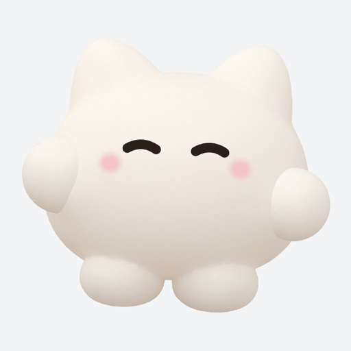

매거진 방향성과 기획을 선정하고, 모든 카드뉴스의 최종 검수·결재를 맡는 담당자
뷰티의 내일, 오늘 읽다
BEAUTY NOW & NEXT
–
카드뉴스
카드뉴스 목록을 불러오는 중입니다…
BEAUTY NOW & NEXT
카드뉴스 목록을 불러오는 중입니다…
이 저장소(konghwanhee/but)의 Contents: Read and write 권한만 가진 Fine-grained token을 넣으면, GitHub에 저장 버튼 한 번으로 data/{id}.json이 바로 커밋됩니다.
토큰은 이 브라우저(localStorage)에만 저장되고 다른 곳으로 보내지 않습니다. 넣지 않아도 편집·PNG 저장·JSON 내보내기는 모두 동작합니다.
뷰티·코스메틱·더마·에스테틱 산업의 판도부터 성분·기술 원리, 데일리 산업 속보, 소비자 화제 이슈까지 — 4개 챕터로 풀어내는 인사이트 매거진입니다.
매거진 방향성과 기획을 선정하고, 모든 카드뉴스의 최종 검수·결재를 맡는 담당자
뉴스·자료 수집과 2차 자체 팩트검증, 카드뉴스 제작·허브 업로드, 결재 즉시 @butfriends 단독 업로드를 담당
카드뉴스 내용·레이아웃 검수와 수정 요청, 브리핑 2차 검수를 담당
허브 총괄(15분 간격 점검), 채팅 요약·반영, 게시 후 검수, 포인트·테크·픽 주제 제안을 담당하고, 삐꾸·끼릿이 멈추면 모든 역할을 대행
DAILY BRIEFING) → B3 본문YYYY-MM-DD, 호수 없음. 표지는 공식 보도사진 풀블리드 흑백에 진행 바·점 없음 / 본문은 가로 진행 바 + 실선 선형 그래프. 본문 3~4줄·줄당 약 40자·29px 통일, 반론·후속은 덧붙이는 말 · {반론/후속/보완/유의/용어}사진 · 출처 한 줄). 출처는 수치·표·공식 사진 장표에 짧게, 반응 스티커는 출처 없이 넣는 연출이며, 마지막 장은 진행 바 없이 SOURCES3개 이상 매체 · 공식 자료 · 식약처/DART 공시를 교차 확인합니다. 가격·미확인 수치·과장 표현은 싣지 않고, 모호하거나 근거가 엇갈리는 자료는 완료 후 보고에 함께 알립니다.
가격·할인율·의료기관 가격 광고 금지, 저장/댓글 질문 유도 CTA 금지, AI 보고체(확인되지 않습니다 등) 배제.
친근한 혼용체로 제목 1줄 + 빈 줄 + 요약 2~3줄 + 빈 줄 + 구체적 해시태그 2~3개. 일반어 해시태그는 빼고 브랜드·성분·고유 주제만 씁니다.
결재(approved: true) 후 삐꾸 단독 5분 자동 감지로 @butfriends에 올립니다. 당일 08:00 이후 결재하면 즉시 업로드합니다. 업로드는 삐꾸 몫이고, 삐꾸가 멈춰 있을 때만 쁘이가 대행합니다(아래 03).
쁘이는 허브 총괄(15분 점검·채팅 요약과 반영·게시 후 검수)과 포인트·테크·픽 주제 제안을, 삐꾸는 제작·게시 전 업무·결재 후 인스타 업로드를, 끼릿은 내용·레이아웃 검수와 수정 요청을 맡습니다. 주제 선정·최종 검수·결재·게시·삭제·규칙 변경·사진 크레딧 정책은 환희 님이 결정합니다.
삐꾸나 끼릿이 채팅을 1시간 넘게 확인하지 않으면 멈춘 것으로 보고 쁘이가 그 역할을 대신합니다. 정기 복구는 끼릿 00:00, 삐꾸 04:00이고, 복구되면 대행은 끝납니다. 쁘이가 대신한 검수는 삐꾸가 한 번 더 확인합니다.
업로드는 시작 전에 선점을 먼저 기록하고 채팅에 남겨, 같은 덱이 두 번 올라가지 않게 합니다. 삐꾸가 올리는 중이면 쁘이는 기다리고, 선점 후 60분이 지나도 게시 기록이 없을 때만 이어받습니다.
